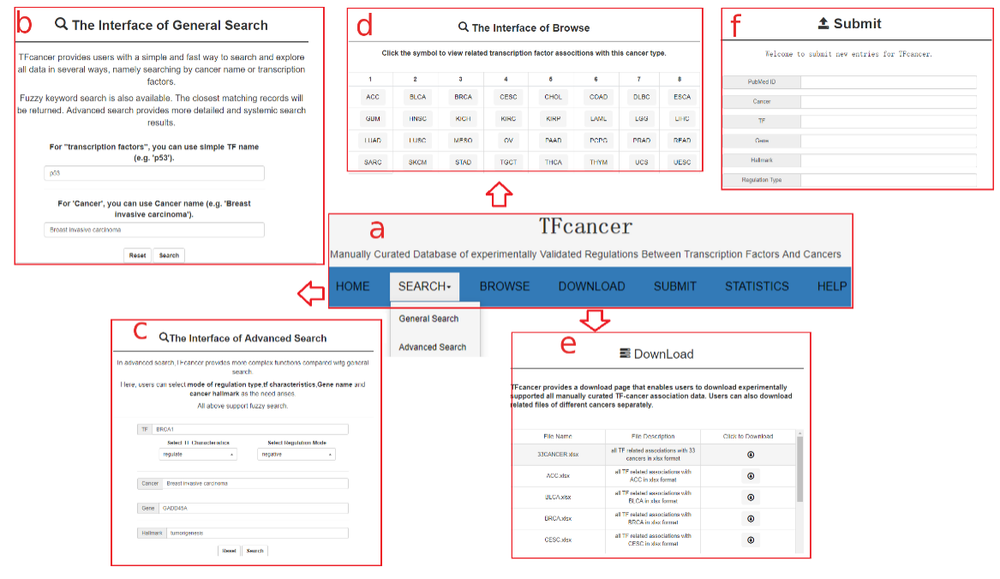

Usage of TFcancer
Figure 1 The introduction of database web interface
a: Seven sub-interfaces of TFcancer, among which SEARCH page contains a drop-down menu with general search and advanced search.
b: The general search allows users to search with specific TF names and 33 cancer full names.
c: The advanced search allows users to choose specific TF characteristics, related regulation mode, cancer associated processes and pathways and gene names, apart from TF names and cancer types.
d: Users can browse TF associtions of each cancer type by clicking the symbol of cancer abbreviation.
e: Users can also download associations of corresponding cancer type in xlsx format in DOWNLOAD page.
f: Users can submit new entries by adding new information in SUBMIT page.
Figure 2 The use of advanced search and details of search results
a: The advanced search interface
b: Users can select multiple TF characteristics according to their needs. The TF characteristics in TFcancer include the dysexpression, molecular alterations of TFs and TF interaction type with other genes..
c: For TFs having interactions with other genes, users can also select their regulation mode, such as positive, negative, some epigenetic modification or impacts of genes’ promoters.
d: After users submit their search requests, the elementary search result page is shown. For each entry, there are 8 columns containing cancer abbreviations, TF names, TF characteristics, genes that have interactions with TFs, regulation mode of the interactions between TFs and genes, cancer processes and pathways affected by TFs, PMID of related literatures and the link of detail page. Some entries do not contain certain information of some columns. They were filled with N/A. Users can also search in the page by inputing keywords at the top left corner of the page.
e: Users can also set different numbers entries per page.
f: The checkbox allows users to selectively display different columns on the page as the need rises.
g: Users can download entries in the result page in different formats.
h: In the detail page of corresponding entry, users can see the title of the literature and the original text of the association entry. TFcancer also provides external links of corresponding TFs and cancers.